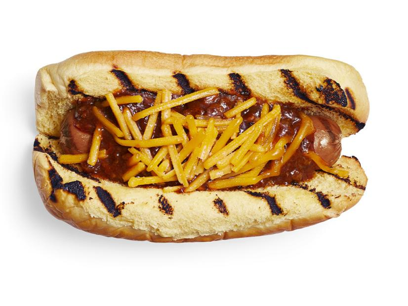

Chili Dogs Recipe

Mouthwatering chili dogs topped with shredded cheddar!
Time: 40 min
Yield: 4 chili dogs
Ingredients:
- 1 tablespoon olive oil
- 1 chopped onion
- 2 chopped garlic cloves
- 1 pound ground beef
- 2 1/2 cups ketchup
- 1 teaspoon chili powder
- 2 tablespoons yellow mustard
- salt and pepper
- 4 hot dogs
- 4 hot dog buns
- shredded cheddar(as much as you want!)
Steps:
- Heat a large skillet over medium heat and add 1 tablespoon olive oil. Add 1 chopped onion and 2 chopped garlic cloves and cook, stirring, until soft and translucent, about 5 minutes. Add 1 pound ground beef, breaking it up with the back of a spoon, and cook until nicely browned, about 10 minutes.
- Stir in 2 1/2 cups ketchup, 1 teaspoon chili powder and 2 tablespoons yellow mustard and simmer until thickened, about 15 minutes. Season with salt and pepper.
- Grill 4 hot dogs over medium-high heat, turning, until marked. Serve on grilled buns and top with the chili and shredded cheddar.